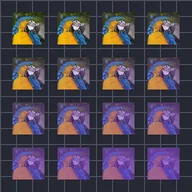

Ulang Grid

Membuat banyak salinan lapisan secara dinamis, tersusun dalam grid.
Grid Repeat membuat salinan lapisan dalam bentuk grid. Count adalah jumlah salinan, dan Position mengatur jarak antar salinan. Pengaturan Range membuat setiap salinan sedikit berbeda dari sebelumnya: lebih kecil atau lebih besar, diputar, lebih transparan. Random Order dan Seed mengacak salinan mana yang mendapat nilai mana.
Pengaturan
| Pengaturan | Jenis | Rentang | Default |
|---|---|---|---|
| Jumlah | Angka | 0 hingga 150 | 5 |
| Posisi | Titik (X, Y) | -99999 hingga 99999 | 500, 500 |
| Jeda | Angka | -9999 hingga 9999 | 0 |
| Posisi Rentang | Titik (X, Y) | -99999 hingga 99999 | 0, 0 |
| Skala Rentang | Angka | 0 hingga 10 | 1 |
| Rotasi Rentang | Sudut | -3600° hingga 3600° | 0° |
| Opasitas Rentang | Angka | 0% hingga 100% | 100% |
| Warna Isi | Warna | – | #FFFFFF |
| Jumlah Isi | Angka | 0% hingga 100% | 0% |
| Awal Rentang | Angka | 0% hingga 100% | 0% |
| Akhir Rentang | Angka | 0% hingga 100% | 100% |
| Offset Rentang | Angka | -1000% hingga 1000% | 0% |
| Easing | Pilihan | Linear, Ease In, Ease Out, Ease In Out | Linear |
| Urutan Acak | Aktif atau nonaktif | – | Nonaktif |
| Seed | Angka | 0 hingga 9999 | 0 |